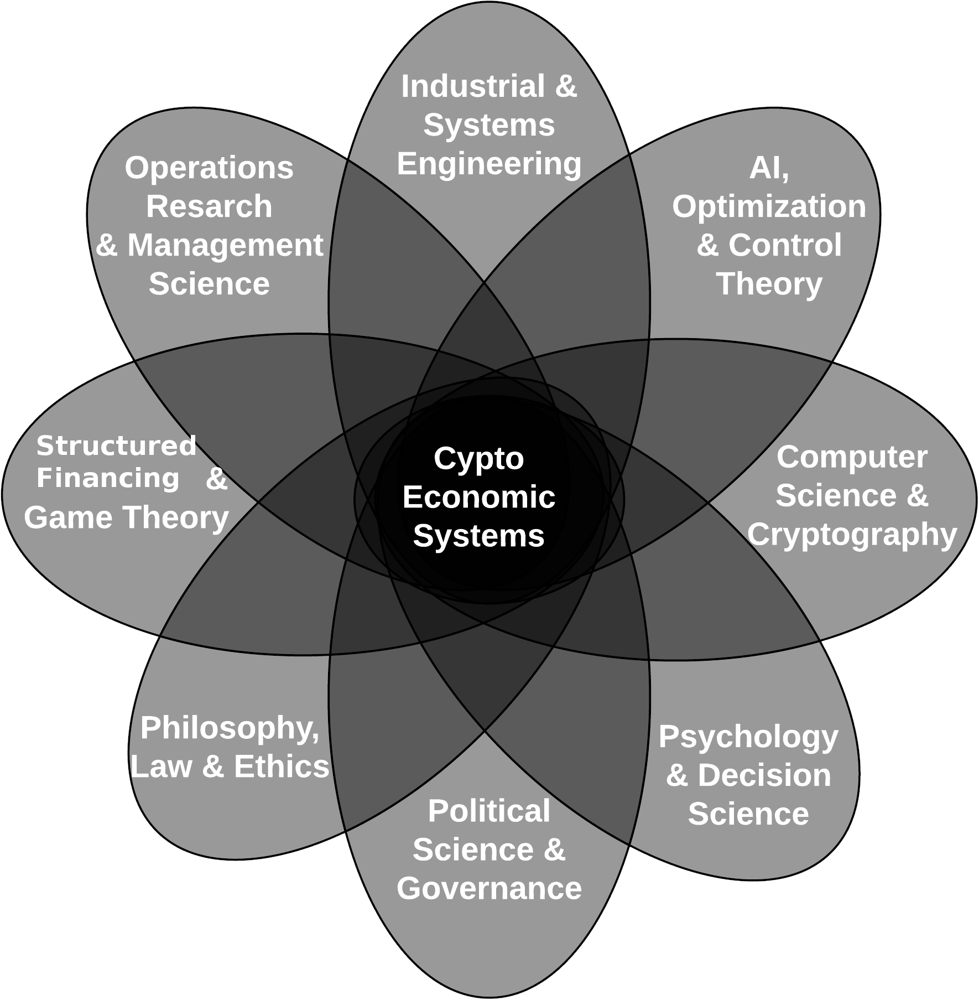

# Approach
Creating a self sustainable ecosystem for complex systems such as SAY which virtual families, children, social workers, builders and e-commerce services relationships needs to be adjusted to reach an equilibrium requires a multiscale modeling (opens new window) approach as it is argued by Shermin Voshmgir & Michael Zargham in this paper on the Foundations of Cryptoeconomic Systems (opens new window).

Virtual Families: users
Children: NGO children
Social Workers: NGO social worker
E-Commerce: ...
# System Goals
The north star, done needs per week
system goal: building on top of the first module which tackles the problem with accessing educational tools and roadmaps...